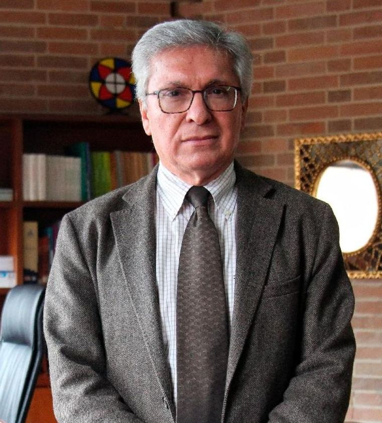

Doctor en Historia por El Colegio de México · Profesor emérito de la UIS · Director del Archivo General de la Nación (2016–2019) · Autor de más de treinta libros sobre la independencia y la nación colombiana.
Medio siglo dedicado a la memoria documental de Colombia.
Armando Martínez Garnica (Bucaramanga) es uno de los historiadores más influyentes de Colombia. Su camino intelectual comenzó lejos de los archivos: se graduó como experto electricista del Instituto Técnico Industrial Dámaso Zapata en 1966, y un año después como bachiller en Filosofía y Letras del Colegio de Santander. Licenciado en Historia y Geografía por la Universidad del Tolima, obtuvo el doctorado en Historia en El Colegio de México (generación 1983-1986) y el título posdoctoral en la Universidad Andina Simón Bolívar de Quito.
Durante veinticinco años fue profesor de la Universidad Industrial de Santander, donde contribuyó a fundar la Escuela de Historia y dirigió el Centro de Documentación e Investigación Histórica Regional. La UIS lo distinguió como profesor emérito, y el Sistema Nacional de Ciencia, Tecnología e Innovación lo reconoce como investigador emérito vitalicio.
Entre julio de 2016 y marzo de 2019 fue director general del Archivo General de la Nación, la entidad rectora de la memoria documental del país. Dirigió la Revista de Santander durante dieciocho años y actualmente preside la Academia Colombiana de Historia. Es autor de más de treinta libros y de doscientos artículos sobre la independencia neogranadina, la Primera República, la historia de las provincias de Santander y la biografía de la nación colombiana.
Su vocación de divulgador lo llevó también a la radio: en Colombia en biografía ha narrado, programa a programa, las vidas que construyeron el país. Esta página reúne su obra, su voz y su archivo personal, ahora digitalizado.
Cincuenta y un libros de su colección personal fueron digitalizados página a página y transcritos contra el ejemplar impreso. Una selección de su obra:
Los cargos que definieron una vida al servicio de la historia.
Titulares y entrevistas en medios colombianos — cada pieza corresponde a una publicación real.
Fragmentos del programa radial en el que Armando Martínez Garnica narra la historia de Colombia a través de sus protagonistas.
¿Quieres entrevistar a Armando, invitarlo a un evento o agendar una conversación? Deja tus datos y él se pondrá en contacto contigo, o escríbele directamente a dr.armandomartinezgarnica@gmail.com.